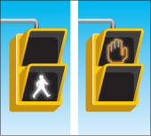
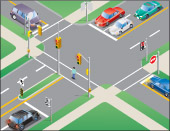

पैदल यात्री संकेत
पैदल यात्री संकेत पैदल यात्रियों को ट्रैफिक लाइट वाले चौराहों पर सड़क पार करने में मदद करते हैं। पैदल यात्रियों के लिए चलने का संकेत एक सफेद रंग का चलने का चिन्ह होता है। चमकता हुआ या स्थिर नारंगी रंग का हाथ का चिन्ह यह दर्शाता है कि पैदल यात्रियों को सड़क पार करना शुरू नहीं करना चाहिए।

पैदल यात्री को पैदल चलने का संकेत दिखाई दे तो वह संकेत की दिशा में सड़क पार कर सकता है। सड़क पार करते समय पैदल यात्रियों को सभी वाहनों पर प्राथमिकता प्राप्त होती है।
अगर पैदल यात्री को चमकता हुआ या स्थिर हाथ का संकेत दिखाई दे, तो उसे सड़क पार करना शुरू नहीं करना चाहिए। अगर पैदल यात्री हाथ का संकेत दिखने पर सड़क पार करना शुरू कर चुके हैं, तो उन्हें यथाशीघ्र सुरक्षित स्थान पर चले जाना चाहिए। सड़क पार करते समय भी पैदल यात्रियों को वाहनों पर प्राथमिकता प्राप्त होती है।

यातायात बत्तियों वाले चौराहों पर जहां पैदल यात्री संकेत नहीं हैं, वहां हरी बत्ती होने पर पैदल यात्री सड़क पार कर सकते हैं। चमकती हरी बत्ती या बाएं मुड़ने के लिए हरी तीर वाली बत्ती होने पर पैदल यात्री सड़क पार नहीं कर सकते।
चौराहे पर पैदल यात्री संकेत
जहां पैदल यात्री के लिए बटन लगे हों, वहां पैदल यात्री को चलने का संकेत चालू करने के लिए बटन दबाना होगा। पैदल यात्री संकेत लोगों को सामान्य ट्रैफिक लाइटों की तुलना में सड़क पार करने के लिए अधिक समय देते हैं। व्यस्त मुख्य सड़क पर, चौराहे पर लगा पैदल यात्री संकेत यातायात को रुकने का संकेत देकर लोगों को सुरक्षित रूप से सड़क पार करने में मदद करता है। चौराहे पर लगे पैदल यात्री संकेत में एक या अधिक क्रॉसिंग, पैदल यात्रियों के लिए चलने और न चलने के संकेत, पैदल यात्रियों के लिए बटन और केवल मुख्य सड़क पर ट्रैफिक सिग्नल लाइटें होती हैं। छोटे और कम व्यस्त चौराहों पर स्टॉप साइन यातायात को नियंत्रित करते हैं।
इन चौराहों से गुजरते समय आपको यातायात नियमों का पालन करना और सुरक्षित वाहन चलाने के कौशल का प्रयोग करना आवश्यक है। चौराहों से गुजरने संबंधी अनुभाग भी देखें।
सारांश
इस खंड के अंत तक, आपको निम्नलिखित बातें पता होनी चाहिए:
- पैदल यात्री संकेतों पर बने चिह्न क्या दर्शाते हैं
- चौराहे पर पैदल यात्री संकेत क्या होता है और यदि आपको ऐसा संकेत दिखाई दे तो क्या करना चाहिए